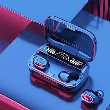

Fútbol
Me gusta el fútbol porque me apasiona la emoción de los partidos, el trabajo en equipo y la energía que se siente al jugar o ver un buen encuentro.

Básquet
Disfruto del básquet por su rapidez, precisión y porque me motiva a mejorar la coordinación y la concentración en cada jugada.

Tenis
El tenis me gusta porque combina estrategia y resistencia. Cada partido es un reto personal y una forma de superación constante.

Música
La música me inspira y me acompaña en cada momento. Es una forma de expresar emociones y conectar con lo que siento.